You Were My First Boyfriend
2023 | 1h 37m
Premiered at SXSW, You Were My First Boyfriend is a feature-length documentary in which filmmaker Cecilia Aldarondo revisits her 1990s adolescence, a generation after she thought she'd left it all behind. Roles: Online Editor.
Memento Mori
2025 | 8:17

Documentary following Josh, a funeral director and father, as he navigates the tension between his professional responsibilities and life at home. Roles: Director, Cinematographer, and Editor.
Up Close With Sharks
2026 | 7:45
Documentary profile on the Pine Knoll Shores Aquarium shark exhibit. Roles: Editor.
Living with Ulcerative Colitis
2023 | 4:39
Personal documentary following brothers Nick and Jordan as they navigate life with ulcerative colitis. Roles: Director, Cinematographer, and Editor.
In the Studio with Bad Temper
2022 | 2:16
Short music documentary featuring DJ Bad Temper. Roles: Director, Cinematographer, and Editor.